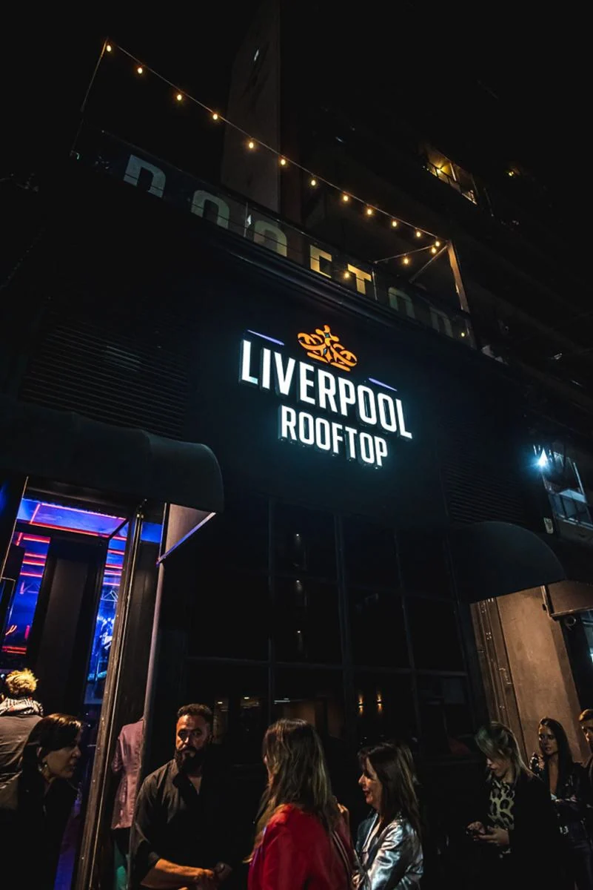
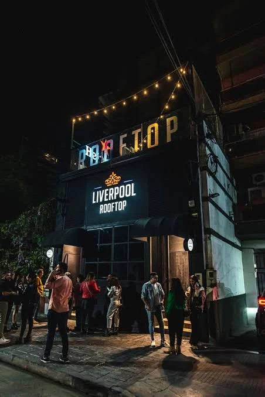
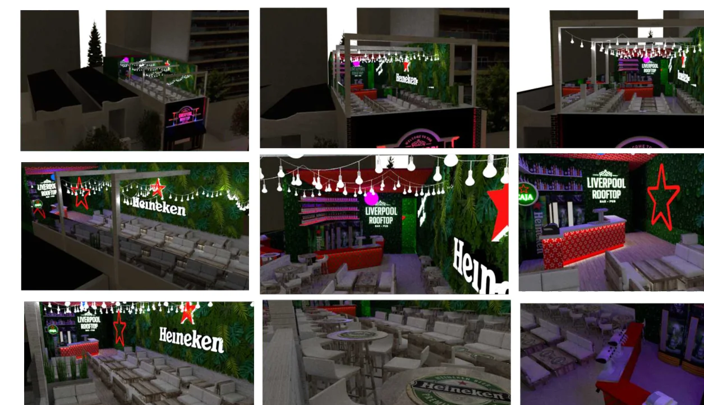
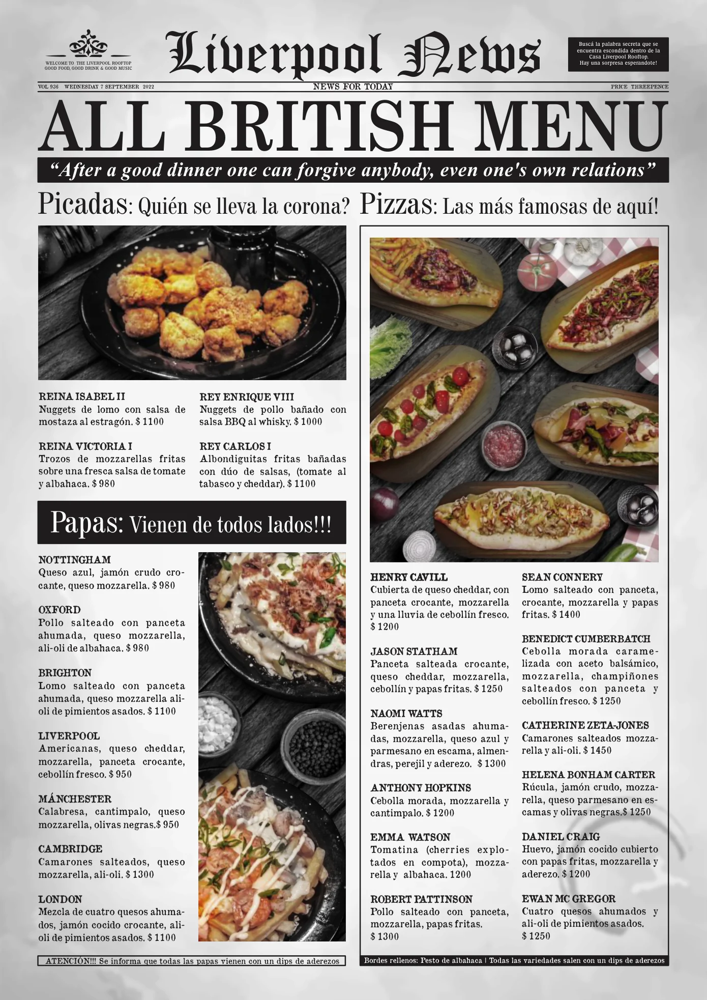
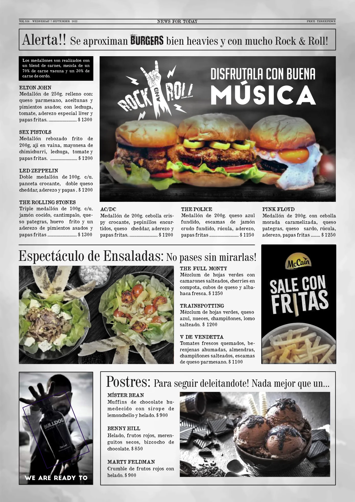

ATMÓSFERA.
Una propuesta visual para comunicar carácter y personalidad en la experiencia de un rooftop.
CASO 14 / ESPACIOS · IDENTIDAD · EDITORIAL
Una propuesta
para vivir la marca.
Una propuesta visual de ambientación y una carta diseñada con lenguaje de periódico británico. Titulares, secciones y referencias musicales articulan una misma personalidad en distintos soportes.
EXPLORAR PROYECTO
00 / EL CONCEPTO
El desafío fue conectar la ambientación propuesta con el lenguaje gráfico de la carta: una estética de inspiración británica capaz de aportar personalidad sin sacrificar claridad al presentar los productos.
Una propuesta visual para comunicar carácter y personalidad en la experiencia de un rooftop.
La carta utiliza referencias británicas y el código gráfico de la prensa como parte de la identidad de marca.
Una narrativa reconocible entre el nombre del lugar, sus categorías de productos y sus materiales de comunicación.
01 / TRABAJOS
El proyecto combina una propuesta de ambientación, renders y el diseño de una carta editorial. Las fotografías del local se presentan por separado como registros de contexto, no como evidencia de intervención arquitectónica.
Propuesta de carácter visual para Liverpool Rooftop, con el ambiente como soporte de una experiencia reconocible.
IMAGEN DE CONCEPTO / ARCHIVO VISUAL
Carta gastronómica en formato de periódico, con secciones de comidas y bebidas, referencias a figuras de la cultura y la música, y titulares propios del universo Liverpool.
CARTA / EDICIONES HISTÓRICAS
02 / LENGUAJE EDITORIAL
La carta toma la forma de un diario: titulares de gran escala, columnas, folios y nombres vinculados con la música y la cultura británica. Más adelante se muestran páginas originales de esta edición histórica.
Gastronomía, cultura británica y música en un mismo lenguaje.
El documento organiza categorías como pizzas, hamburguesas, picadas, bebidas y postres mediante títulos y bloques de contenido.
La carta recurre a referencias cinematográficas y musicales para nombrar productos y construir personalidad editorial.
El tratamiento de periódico aporta folios, titulares y secciones. El desafío de diseño es sostener el concepto sin sacrificar la legibilidad.
Este esquema interpreta el lenguaje editorial; las páginas originales aparecen más adelante. Los precios pertenecen a la edición histórica.
DOCUMENTACIÓN VISUAL / ARCHIVO DEL PROYECTO
Selección de registros del local, propuesta gráfica de ambientación y páginas de la carta editorial original. Se distinguen fotografías de referencia, renders y diseño impreso.





Las fotografías documentan el contexto del local y no se atribuyen a Luis. Su procedencia y autorización para publicación definitiva deben comprobarse. Los renders se identifican como propuestas y los precios de la carta corresponden a archivos de 2022, no a ofertas vigentes.
03 / CONTEXTO Y AUTORÍA
El trabajo documentado reúne propuesta visual de ambientación y diseño editorial de la carta. Los registros fotográficos muestran el contexto del local, pero no acreditan autoría de la arquitectura, la obra o las fotografías.
Alcance: propuesta visual de ambientación y tratamiento editorial de materiales gastronómicos con referencias británicas. Los renders representan un concepto, no prueban la ejecución del espacio; la construcción, la arquitectura y la autoría original de marcas o fotografías de terceros no se atribuyen al diseñador.
14 / 17 · PORTFOLIO PERSONAL
Un caso donde el diseño conecta propuesta de ambiente, cultura gastronómica y recursos editoriales en una experiencia de marca.